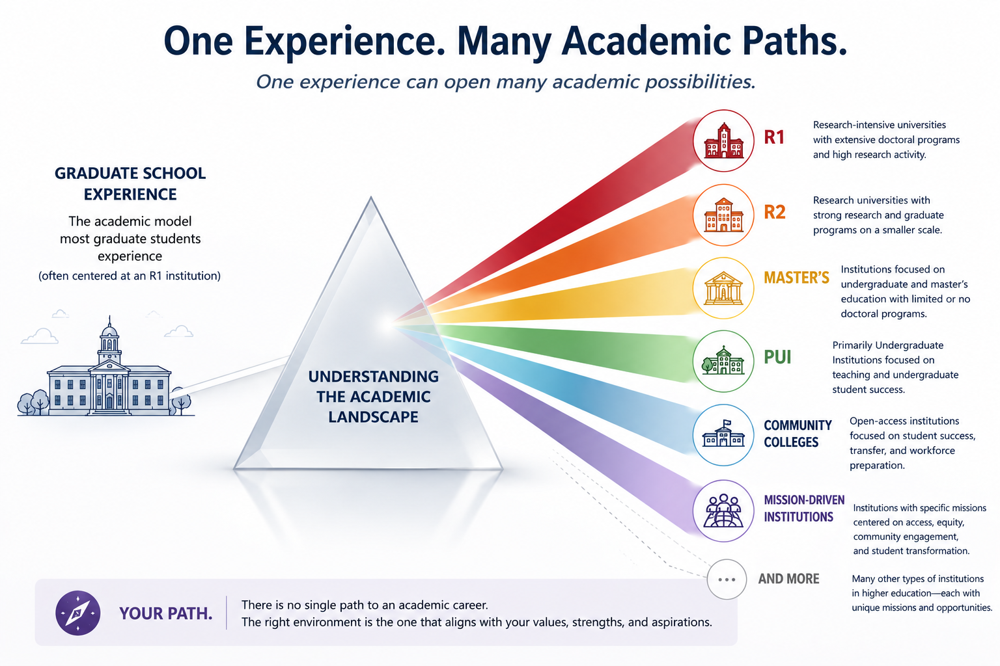
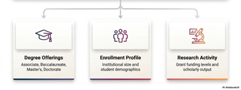
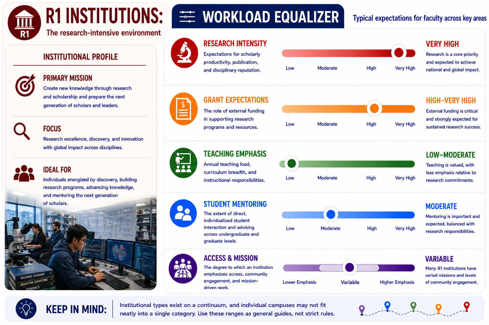
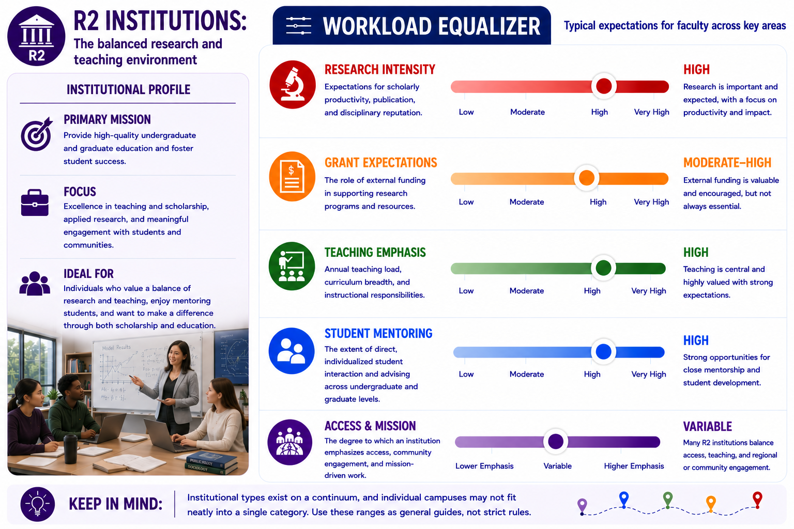
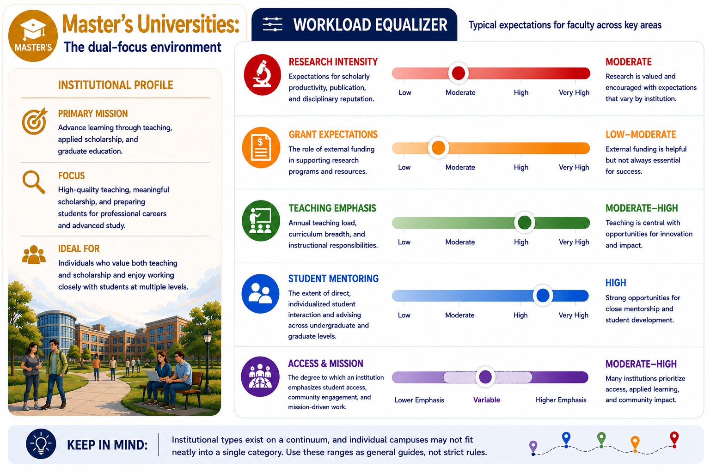
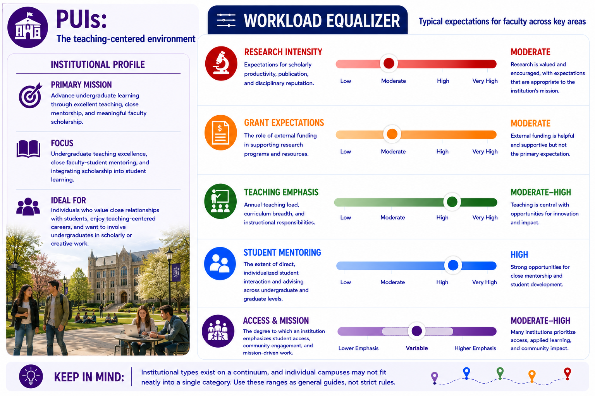
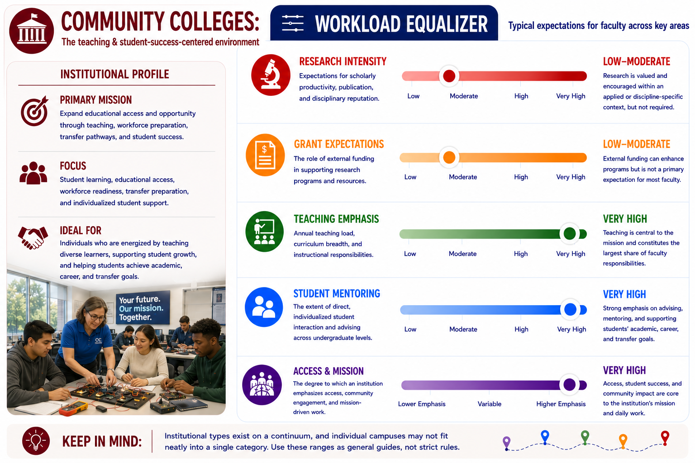

Before exploring academic careers, it is important to understand
that higher education is not a single environment. Institutions
differ in mission, student populations, research expectations,
teaching responsibilities, and definitions of success.
Learning Objectives
Understand why faculty careers differ across institutions.
Learn how Carnegie classifications describe institutional missions.
Compare common types of academic institutions.
Reflect on which environments best align with your interests and goals.
The Illusion of the Academic Monolith
Many graduate students experience academia through the lens of a
research-intensive university and assume that all faculty positions look
similar. In reality, higher education encompasses a wide variety
of institutions with different missions, student populations, priorities, and measures
of success.
Key Takeaway
Faculty careers differ dramatically across institutions.
Teaching expectations, research activity, mentoring,
service, and promotion criteria are all influenced by
institutional mission.

Faculty Perspective Video
The Carnegie Classification System
One way to understand this diversity of academia is through the
Carnegie Classification system, which categorizes colleges and
universities according to characteristics such as the degrees
they offer, the students they serve, and the extent of their
research activity. Although the system contains numerous categories,
aspiring faculty can think of it as a framework for understanding the
broad range of institutional environments that exist within higher education.
Among the most commonly referenced categories are Research 1 (R1) universities,
Research 2 (R2) universities, Master's-granting institutions,
Doctoral/Professional Instutions, Primarily Undergraduate Institutions (PUIs),
and Community Colleges.

For graduate students exploring academic careers, the most useful distinction
is not the classification itself, but what it reveals about an institution's
priorities. Some institutions place greater emphasis on research and doctoral
education, while others focus primarily on undergraduate teaching, workforce
preparation, or student access. These differing missions shape faculty
responsibilities, expectations for scholarship, teaching loads, and promotion
criteria. Of course, it should be noted that institutional types exist on a
continuum, and individual campuses may not fit neatly into a single category.
Still, understanding the categories can help understand the continuum.
Important Insight
The classification itself is less important than what it
reveals about institutional priorities and faculty
expectations.
Comparing Institutional Types
Expand each section to learn more about common institutional
types and the faculty careers associated with them.
Research 1 Universities (R1)
R1 universities are research-intensive institutions that support
extensive doctoral education and produce a large volume of scholarly
research. Faculty often lead externally funded research programs,
supervise graduate students and postdoctoral researchers, and contribute
to advances in their fields through publications and professional service.
Teaching remains an important responsibility, but research productivity
and scholarly impact typically play a central role in faculty evaluation.
These institutions are often well suited for individuals who are passionate
about discovery, graduate mentorship, and building large-scale research
programs.

Faculty Perspective Video
Research 2 Universities (R2)
R2 universities share many characteristics with R1 institutions
but generally operate on a smaller scale. Faculty are expected to maintain
active research agendas and contribute to their disciplines while often
carrying somewhat greater teaching responsibilities. Graduate programs may
be smaller, allowing faculty to engage more directly with both undergraduate
and graduate students. Many faculty view R2 institutions as offering a
balance between research and teaching, providing opportunities for meaningful
scholarship alongside substantial student interaction.

Faculty Perspective Video
Master's Institutions
Master's-granting institutions focus primarily on undergraduate and
master's-level education, with limited or no doctoral programs. Faculty
often balance teaching, scholarship, and service in ways that vary
significantly across institutions. Research is frequently encouraged,
though expectations for external funding and publication may differ from
those at research-intensive universities. Because graduate programs are
typically smaller, faculty often have opportunities to work closely with
both undergraduate and master's students while maintaining active scholarly
interests.

Primarily Undergraduate Institutions (PUIs)
Content describing PUIs.

Community Colleges
At Primarily Undergraduate Institutions, undergraduate education is
the central mission. Faculty typically teach a broad range of courses and
play a significant role in advising, mentoring, and supporting student
development. Scholarship remains an important component of faculty work at
many PUIs, but research activities are often designed to engage undergraduate
students directly. Smaller class sizes and close faculty-student interactions
create opportunities for personalized mentorship and a strong focus on teaching
and learning.

Doctoral/Professional Universities
Content currently under development.
Summary
INSTITUTION COMPARISON MATRIX
TENURE & PROMOTION GRAPHIC
Pedagogical Research
Faculty at many institution types engage in scholarly work
focused on teaching and learning. Educational research can
play an important role in promotion and professional
development, particularly at teaching-focused institutions.
Reflection
What aspects of academic life are most important to you?
How important is research to your professional identity?
What types of students do you most enjoy mentoring?
What balance of teaching, scholarship, and service would be most fulfilling?
Which institutional type seems most appealing to you and why?
What surprised you most about the diversity of academic careers?